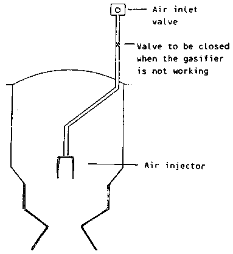

The power-plant of Loma Plata is equipped with three downdraught gasifiers - two of Imbert design and one of local with a nominal gas production capacity of 1800 m³/h each. The gasifiers are fed by means of conveyors from the day-hoppers which are installed at the front of the gasifiers in an underfloor pit (see figure 6.2). The wood-fuel is loaded from the feed hopper to the gasifier automatically, to match the gasifiers consumption and to balance the requirement of the wood gas engines.
The gasifiers operate at negative pressure, which results from the suction of either the gas engine or a gas blower. The total height of the Imbert gasifier is 7.5 metres and the outer diameter 2.1 metres. The third gasifier, which is of local design and manufacture, has a higher reduction zone, which enables the gasifier to operate at lower temperatures without tar entrainment in the produced gas.
Figure 6.2 Schematic Lay-out of the wood-fuel preparation and gasifier units (g)
The wood descends through the gasifier by gravity. At start-up charcoal is loaded in and below the hearth zone, with wood on top. Lighting is done with some straw or a piece of paper. After start-up it only takes about five minutes for gas production to begin, because the charcoal reacts very quickly with air in the hearth zone. The total time of approximately 40 minutes is needed to achieve full gas production capacity. The air intake is provided by a system of pipes and nozzles, with preheating of the air through heat-exchange with the gas produced. Heat conservation is aided by insulation of the outer jacket. Figure 6.3 shows an extra air inlet device, that was installed to ensure complete cracking of the heavier hydrocarbon come portents. The gasifiers are designed to operate down to 25% of full load capacity. Sufficiently high temperatures in the oxidation zone give a gas practically free of tar.
If operation of the gasifiers is interrupted or terminated, the engines have to be turned off. But, if an appropriate temperature has already developed inside the gasifier, gasification re-starts immediately after turning on the suction blower, even after longer stops.
The ash content of the wood is approximately one per cent by weight. Most of the ash and also some fine charcoal fall down into the ash collection chamber, through the lower grate of the gasifier. Normally the grate is moved from time to time by mechanical means. The ash is taken out through a gas-tight service opening, with an automatic ash removal system. This is done with two to three day intervals.
From the gasifiers the gas is first passed through multi-cyclones (one per gasifier), which separates most of the dust and fly ash dragged by the gas. The amount separated has been on average 0.1% of the dry wood-fuel fed to the gasifiers.
After the cyclones the gas is led through water-scrubbers, coolers, and filters to a secondary charcoal filter, where the final impurities and moisture content of the gas is separated. Before the clean and dry wood gas is finally fed to the engines, it is slightly compressed, with the aid of an electrically driven compressor and stored in a buffer tank.
Figure 6.4 shows a typical commercial Imbert gasifier-engine unit, from which the ones at Loma Plata are slightly modified.
Figure 6.3 An extra air-injection device installed in the gasifiers

Figure 6.4 Schematic diagram of a typical Imbert gasifier-engine-generator unit